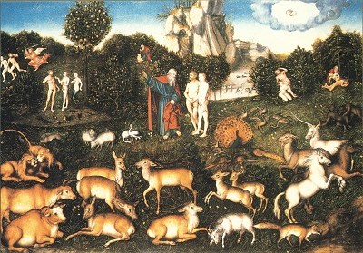

Sacred Texts Earth Mysteries
Buy this Book at Amazon.com
|

The Fall of Man, by Lucas Cranach the Elder [16th c.] (Public Domain Image) |
Paradise Foundby William F. Warren[1885] |
The location of the Garden of Eden should be one of those unanswerable questions, such as 'what song did the sirens sing?' This has not stopped speculation on the topic. Some of these works treat Eden as a metaphor for the human body, such as this text. Others were much more literal. William Warren wrote this 500 page tome to propose a polar Eden, in some primeval ice-free epoch. He systematically employs data from contemporary geology, ethnology, zoology, botany and paleontology to bolster this argument.
In the 19th century, polar explorers had yet to fill in the blanks on the maps at the poles, and geologists had yet to discover plate tectonics, or create detailed maps of paleogeography. We now know that the last time that the poles were ice-free was long before humans walked the earth. In addition, there is no northern polar continent, and probably never has been. However, recently one author (Out of Antarctica, Robert Argod, ISBN 1902699459) has proposed that humans originated in Antarctica, and migrated north. He uses much the same collection of data as Warren, although he leans very heavily on a hypothetical pole shift, which Warren did not.
The argument of this book is obviously moot, and much of the hard scientific data is either misinterpreted or obsolete. However, Warren's review of the literature of the folklore of the world-mountain, the tree of life, and the earthly paradise is of continuing value, and worth reading if you have any interest in the mysteries of our past.
Index of Authors Referred to or Quoted